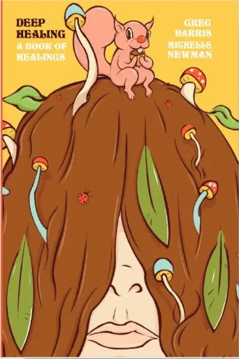

A surreal self-help book disguised as a comedy — or maybe the other way around. Through magik affirmations, laugh meditations, and breathing exercises, Deep Healing is a book of poetic instructions for life that invites the reader to a remembering of their truest, wisest self… and how that self is wrong.
This is healing that doesn't take itself too seriously — because healing is serious business, and nobody likes that. Perfect for burned-out creatives, recovering perfectionists, soft witches and blood wizards — everyone allergic to traditional self-help.
Buy NowDeep Healing is my Bible.
— Tig Notaro
I'm convinced this book could heal me.
— Kate Berlant
This book is comedic meditation in written form. I needed these new perspectives to just think and feel and breathe something different. I will read this multiple times, every year.
— Rory Scovel
Anomalous Learning. Love Existential Greg. Rolls Along. It's my new favorite beach read.
— Jared Harris
In a world where even the human soul can be commoditized, Deep Healing commits a welcome act of spiritual piracy. It's a self-help book disguised as a joke — or maybe a joke disguised as dharma. The 1960s had Abbie Hoffman, Paul Krassner, and Alan Watts. Today, we have Greg Barris.
— Doug Rushkoff
His powers are out in the wide open now. Deep Healing is a portal, and he's inviting us to fly through it.
— Adrian LeBlanc, Journalist and author of Random Family